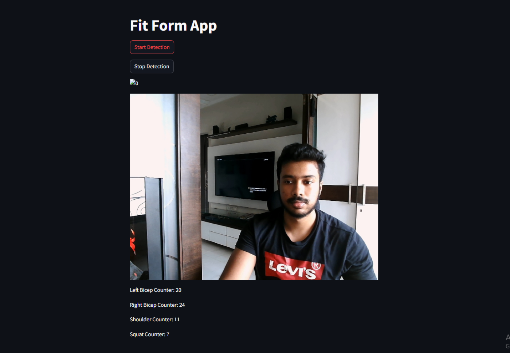
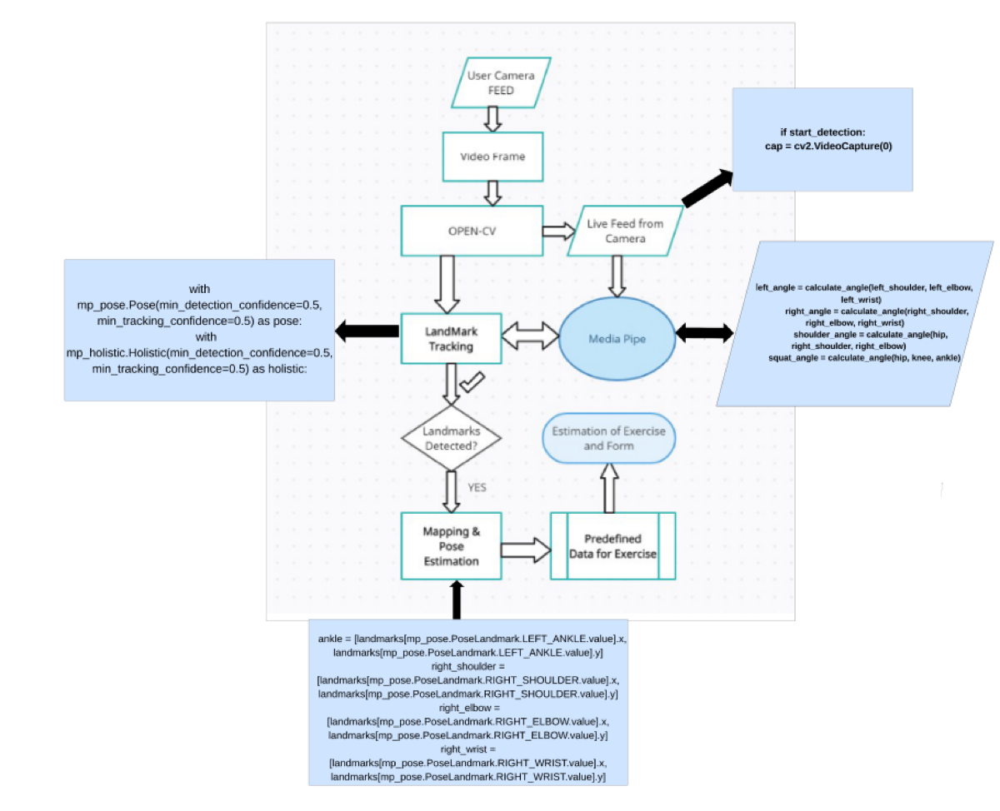
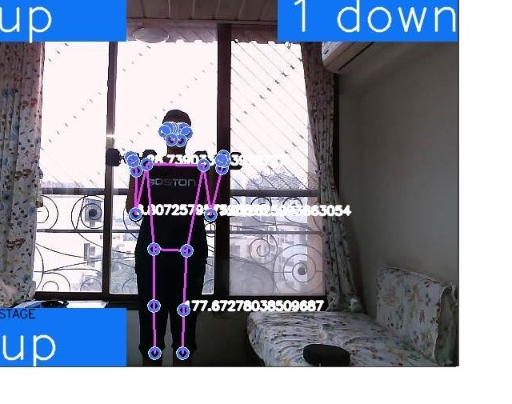
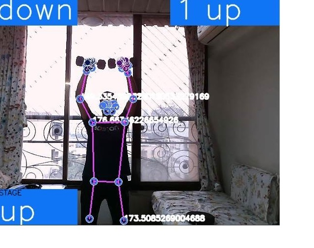
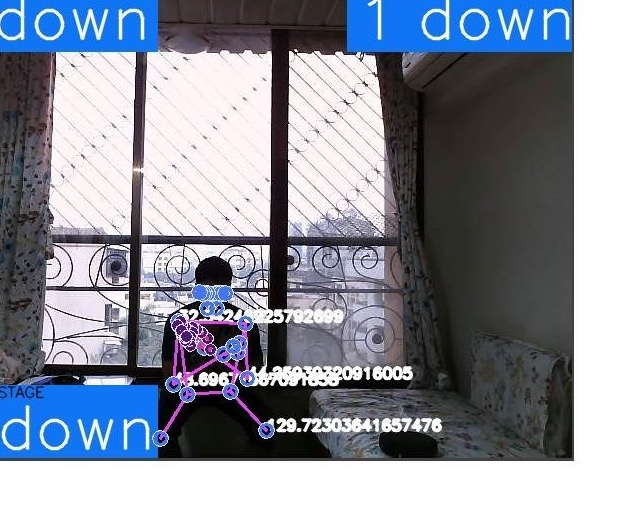

Case study · 02 · Computer vision · Patent published
FitForm: a camera‑based coach for exercise form.
Pose estimation that counts repetitions and evaluates form while a person trains. It started with a personal question: could the same computer‑vision tools used for detection become useful feedback during an ordinary workout?

Overview
A repetition counter can tell someone how much they moved, but not whether the movement was safe or effective. FitForm follows 33 body landmarks from a standard camera, turns them into joint relationships for each exercise, and checks those measurements against form rules while the user trains.
It supports posture‑aware counting for movements such as squats, curls and presses. A repetition only counts when the motion completes the required range, so a half‑squat or a swinging curl does not inflate the number. The work led to the publication of Indian patent application 202421099595 on 17 January 2025.
How it works
- Pose estimation. MediaPipe's BlazePose returns 33 body landmarks per frame from an ordinary webcam, fast enough to run on CPU.
- Joint angles. Relevant landmark triplets become angles every frame: hip‑knee‑ankle for squats, shoulder‑elbow‑wrist for curls.
- State machine per exercise. Angles drive an up/down stage detector, and a rep counts only on a full cycle that stays inside the posture thresholds.
- Live correction. OpenCV overlays the skeleton, stage, angle and counters directly on the video so form can be fixed mid‑set.
- Session logging. Counts per exercise are collected with Pandas for review after the workout.
Impact
What I learned
FitForm changed how I think about applied computer vision. Detection alone was not the product. The useful part was translating landmarks into feedback a person can act on in the middle of a movement.
It also taught me that thresholds are a design decision, not a constant. Too strict and honest reps go uncounted; too loose and the counter stops meaning anything.
Gallery




